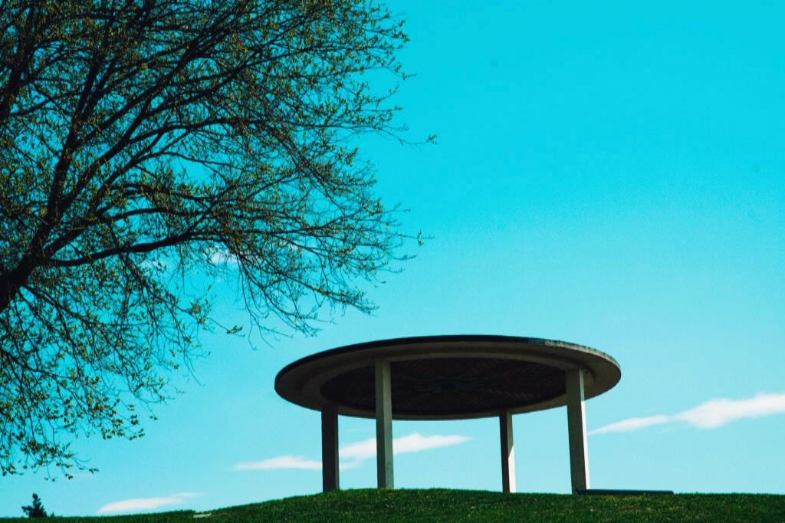

Program for dagen

13:00 – Vielse i Paviljongen, Torshovparken
Velkommen til en stemningsfull utendørs seremoni. Ta plass i god tid.
Velkommen til en stemningsfull utendørs seremoni. Ta plass i god tid.
16:00 – Velkomstdrink på Månefisken
Oppmøte ved festlokalet. Hvis været er fint blir det velkomstdrink på terassen utendørs.
Oppmøte ved festlokalet. Hvis været er fint blir det velkomstdrink på terassen utendørs.
17:00 – Festmiddag
Taler, mat og drikke. Nyt kvelden sammen med oss!
Taler, mat og drikke. Nyt kvelden sammen med oss!
19:30 – Kaker og kaffe
Kakebordet åpner og det serveres kaffe. Flere venner blir med på festen!
Kakebordet åpner og det serveres kaffe. Flere venner blir med på festen!
20:30 – Fest og dans
Musikk, dans og feiring ut i de små timer! Det blir muligheter for flere taler og underholdning.
Musikk, dans og feiring ut i de små timer! Det blir muligheter for flere taler og underholdning.
02:00 – Takk for i kveld!
Vi takker for en fantastisk dag sammen.
Vi takker for en fantastisk dag sammen.